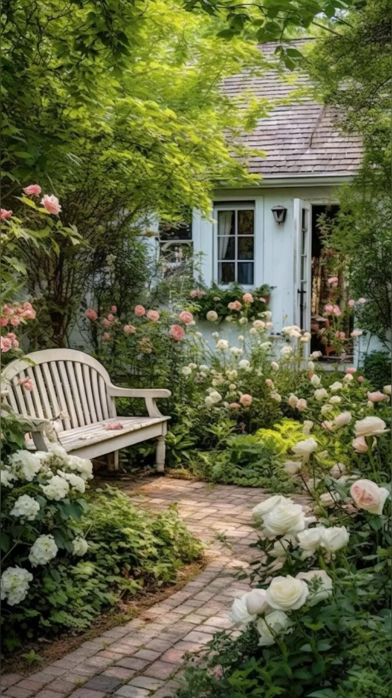
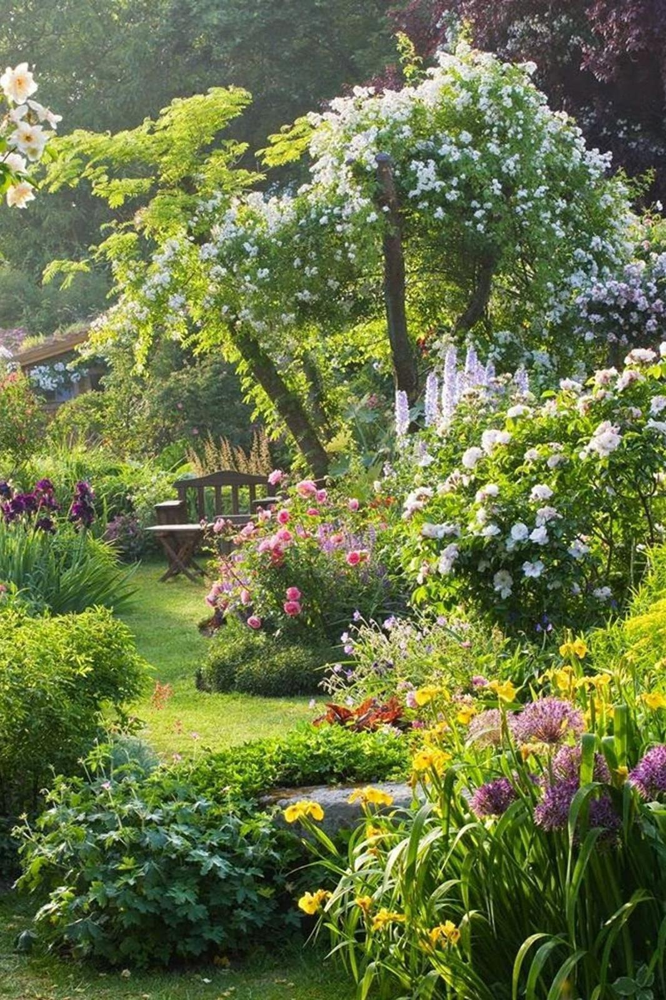
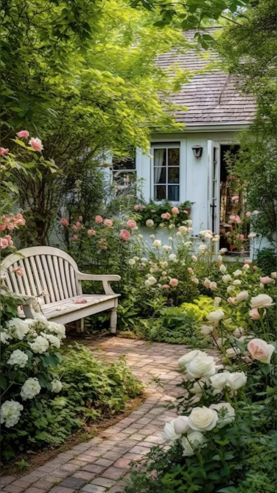
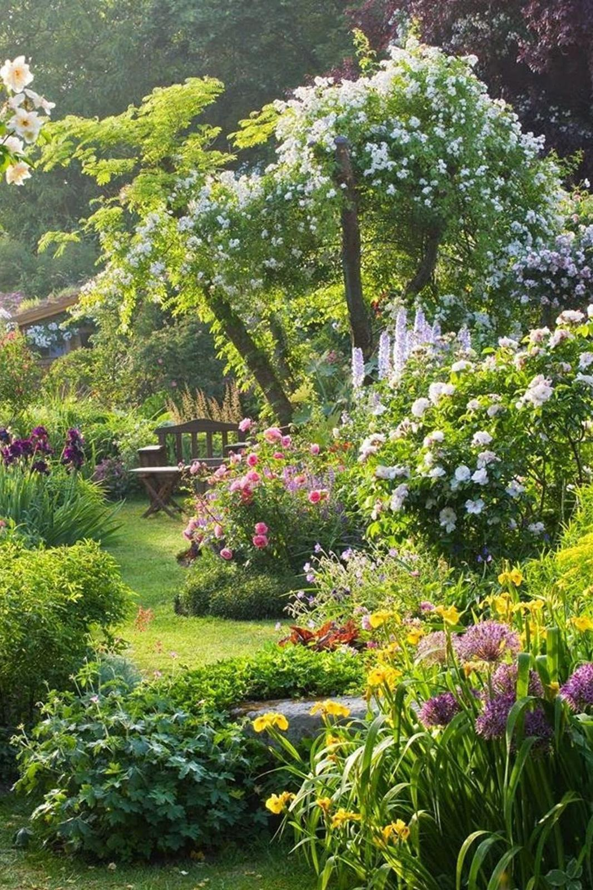
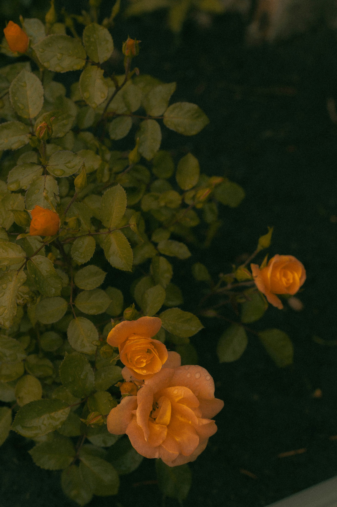
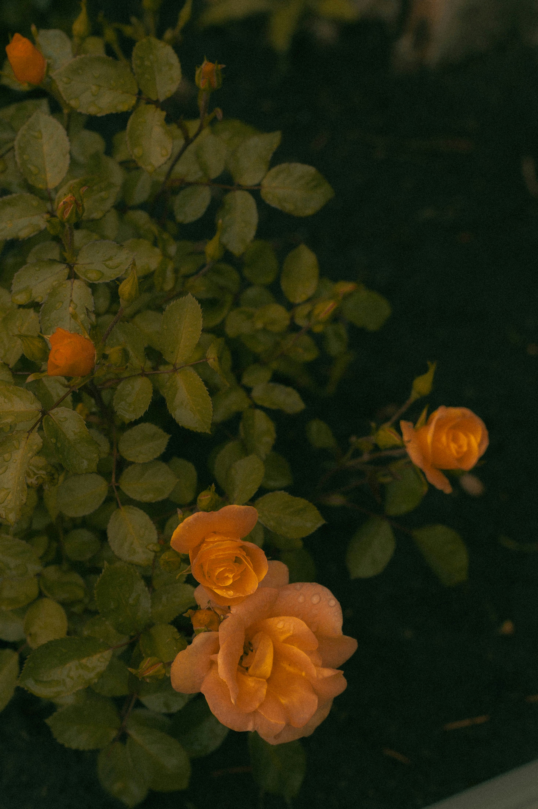

Découvrez nos projets
Chez Lucas Jardins, nous mettons notre expertise à votre service pour créer des espaces verts uniques et harmonieux. Découvrez nos plus belles réalisations, entre jardins paysagers, terrasses modernes et systèmes d’arrosage innovants.


 



 
